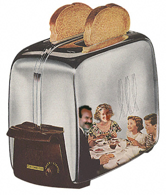

 the Toast Point page!
last updated April 19, 2000
 Welcome to Eric Peterson's Toast Point Page, the site that gives you access to the most beautiful boys in the world! Although not as fabulous as justjack.com, and not as well-dressed as the Fedex Combat Rangers, we celebrate all that is scintillating and tweaks one in interesting places! Before we get to the normal stuff, let's get caught up.
Welcome to Eric Peterson's Toast Point Page, the site that gives you access to the most beautiful boys in the world! Although not as fabulous as justjack.com, and not as well-dressed as the Fedex Combat Rangers, we celebrate all that is scintillating and tweaks one in interesting places! Before we get to the normal stuff, let's get caught up.
Hee Hee, What's with the Toaster?
My friend Marie likes to do sick and twisted things with the pictures I post on my website. This is the Toast Point family: Wumpus is the daddy, I'm the mommy, and she threw in a couple of kids, which thank goodness we don't have in real life. Excellent. Our 20th Anniversary concert was a big success, both musically and audience-wise. We gave a chamber-music concert on Feb. 13th and our spring concert, "Water Music", is on April 8th. What Else is Going On?
I had a birthday, where I got a really cool digital camera. You can also see my pictures from marching in the Village Halloween Parade. Stupidly, I forgot to have someone take a picture of me, but I was wearing a Brunnhilde hat with horns and braids.
Thanksgiving pictures are up!
I also have Xmas pictures to post... but they're not up yet. And what about the famous Wumpus/Toast Point Wedding?
It's on perpetual hold. It always seems to be "next spring". Perhaps we don't want to stop living in sin! And now to the games.
Who am I? * Why Toast Point? News * Contests * Links * Assorted
Who is Eric Peterson?
Read my bio page to find out all sorts of stuff!
Why Toast Point?
Toast Point is a term of endearment from my Wumpus! Once upon a time, when the Wumpus and I were dating, we were getting all googly and disgustingly adorable and calling each other cute things. After I called him "my little nacho chip", he responded with "my little toast point". I thought that was the cutest thing ever, and so unique! So there you are. Toast Point is a moniker that works much better in print than verbally, though. (Now we call each other "sweetness" and "honeyman", if you're curious).
News
April - Concert is over, it was FABulous. Thanksgiving pictures are up! And I'm going to be conducting Patience in Toronto at the T2K Gilbert & Sullivan
singout!
March - The chamber music concert was excellent and well-attended. Wumpus and I are both going through huge transitions with our jobs, so we're both a mess. We're also in full-scale war with our recalcitrant cat, who hits the box only when he feels like it (seldom). Like you needed to know that.
January - Wumpus and I had the most incredible relaxed time over the holidays. A vegetative Christmas with my parents in Beaufort, then the five day cruise, which was terrific. Pictures will be posted eventually. Now we're back to the old grind, but we have a busy month ahead of us, with tickets to the Radio City Christmas Special, Putting It Together and Beauty and the Beast. Plus our fifth anniversary January 15th!
December -
Now that the concert is over (hurrah!), Wumpus and I are traveling to Beaufort SC to spend Christmas with my parents. Then we're taking a lovely Carnival cruise to Cancun and Key West, which will put us at sea when the nineties end and the "naughties" begin.
July -
Since I've acquired a gorgeous new baby grand, I'm selling my beloved spinet. If you know anyone in the New York metropolitan area who would like a perfectly nice upright piano (which has been continuously praised as a quality instrument by all the tuners who've worked on it), please send 'em my way.
Contests
Once upon a time, I ran three contests on the web. They were a great source of entertainment to me and to the regular submitters. Sadly, I no longer have time to maintain them, but here you can find four years of entries.
Links
I removed the Toast Points of Reference because you all know where Yahoo and Alta Vista are by now...
Assorted
Send mail to Toast Point at eric@toastpoint.com. Friendly greetings, lavish praise, what have you... Complaints should be directed here.
Credit for the toast graphic goes to the lovely Esther Harlow, who actually scanned a piece of toast for me.
I get discounts on my monthly web page bill if I display this button. I get even more money off if you click the button - try it and see! {kind=link}
{kind=link}